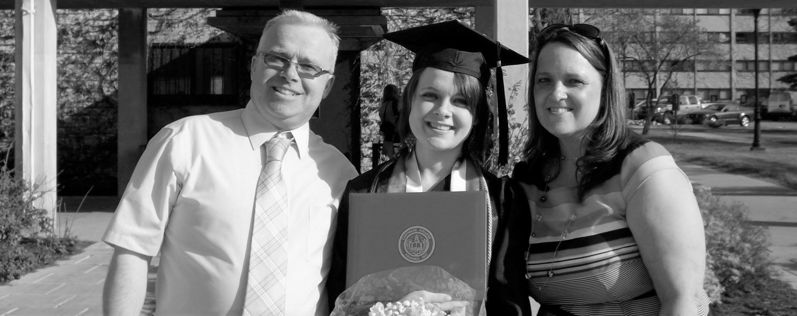
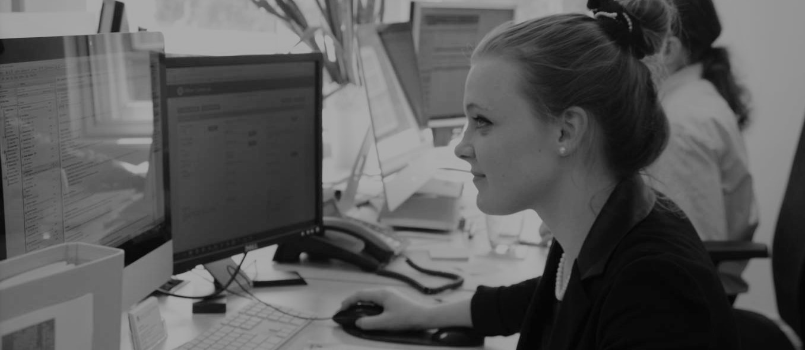

I was born in the USA and lived there until I was sixteen. Then I packed my bags and headed to Europe and I haven't looked back. I am passionate about speaking to people and learning about their perspectives. I can sometimes be found playing the cornet in various towns and villages across Surrey. When I'm not doing that, I'm almost certainly huddling around a cup of coffee, either freelance translating or learning new skills on my quest through the world of web development. I am the proud guardian of three lovely pet rats, who I have trained/bribed to do a few different tricks in exchange for sweet corn. I'm eager to make an impact in a supportive and uplifing environment, and I can't wait to see what is just around the bend.
As a military child, I bounced around a bit during school. We ended up in Michigan where in 2011 I graduated from Midland High School after a eventful few years spent playing soccer, running cross-country, and playing trumpet in the marching band. Looking back it's hard to imagine how I found time to breathe! My senior year, I was awarded a scholarship by the Congress Bundestag Youth Exchange program to study abroad in Germany, and I jumped at the opportunity. I packed my bags, applied for my first passport and spent a year of my life perfecting my German and embracing the sights and sounds of Europe. Three years later I was graduating cum laude with with a BA in International Political Economy and a minor in German Language. Subsequently I studied International Comparitive Sociology, until I was hired as a translator for my University which is when it hit me that I could go into translation. I quickly looked up an MA course in Translation Studies and a year later I was handing in my dissertation and looking for my first real job. Little did I know that three years into that first adult job I would be back in night school taking a series of courses in London furiously trying to learn the mysteries of computer science.
In highschool I worked for a popular fastfood restaurant as soon as I turned 16, but after returning from my year abroad, I approached a local business for opportunities relating to my unique expertise in the German Language, my boldness soon paid off as I soon landed a steady job as an Administrative Assistant at a local law firm. Unfortunately, I soon had to leave to attend university, but that didn't discourage me from seeking alternative sources of revenue. I quickly collected several different paid jobs around the university and when I graduated, I had worked off nearly all of my college debt. During one of our J-term semesters at university, I asked the member of German parliament that I had connected with on my year abroad if I could do an internship in his regional office. He quickly agreed and I was tasked with a variety of activities surrounding supporting a busy member of parliament and his duties. I enjoyed my time abroad so much that I came back to Germany to study a Masters in International Comparative Sociology until the University started asking me to help them translate some of their materials which is when it hit me: I should go into translation. I soon found my first real life job as a Translation Project Manager at Surrey Translation Bureau where I have been now for around three years. For the future, I'd like to keep developing my skills and hopefully meet some interesting people along the way.
Email: ashleylaurel@outlook.com
Mobile: 0752.175.8780
LinkedIn: www.linkedin.com/in/ashley-mikkola